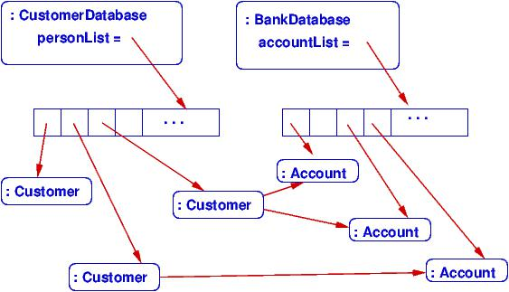
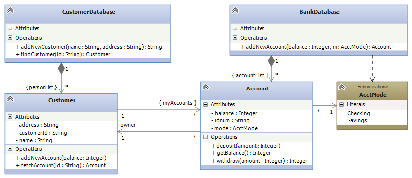
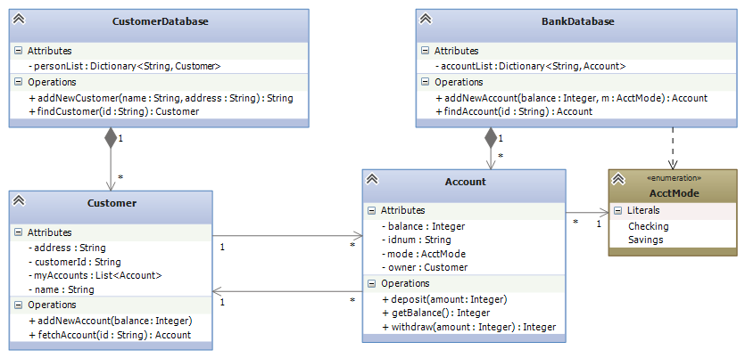
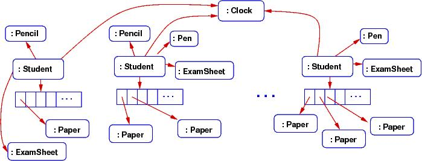
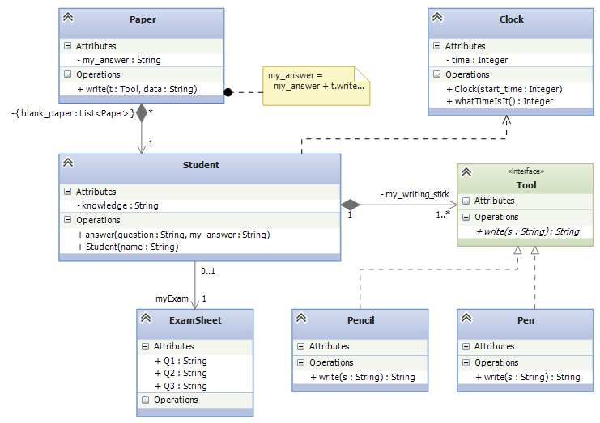

Course Notes — CIS 501: Software Architecture and Design, Fall 2014
An object diagram is a “blueprint” of how storage is managed when a system executes. It is similar to the “traffic diagram” an architect makes of a building that shows the movement of people through the building while the building is used.
But an architect also makes a “floor plan” of the building, which shows the layout of rooms, halls, and stairs that will be constructed for use.
A class diagram is a blueprint of the components needed to build an executing software system — it is the “floor plan” of the software system. It is the most important blueprint form that we learn in this course.
UML class notation is used to draw a class diagram. We use the variant that is supported by Visual Studio, which is documented in the lecture note on Using UML Class Notation.
At the end of the previous lecture note (Storage and Object Diagrams), there were examples of object diagrams. One was of a banking database. Here’s a repeat of part of that system:
The object diagram shows how two “controller” objects “own” the multiple customer records (objects) and the multiple account records. Further, a customer record holds handles to the accounts that the customer owns.
When we program the database, we write classes that can generate the object diagram. This means we need at least classes for CustomerDatabase, BankDatabase, Customer, and Account. The classes will depend upon (reference) each other in the pattern shown in the object diagram.
A class diagram shows the classes that must be written and the dependencies. Here is a class diagram that defines the classes that must be coded to bring to life the database:
Additional detail — field names, methods — are added to indicate what must be coded to implement the database.
The meanings of boxes and arrows are documented in the lecture note on Using UML Class Notation. Here is a quick summary:
The above format is standard and has been used for decades. But some people find the labels on the arrows confusing. When you use the Visual Studio to draw the diagrams, you can omit the labels if you declare the correct fields, like this:
One advantage of this alternate approach is that Visual Studio can generate your C# code for you from the class diagram you draw (see MSDN’s Generate Code from UML Class Diagrams article). (Of course, Visual Studio will not code the bodies of the methods, but it will generate everything else! This is a big payoff for drawing a class diagram before you start coding.)
Say we are designing a computer simulation of students taking an exam. The students bring some blank paper, and some pencils and pens. At the exam, each student gets a question sheet; all the students share (well, look at) the big clock at the front of the room.
The computer simulation must construct objects for the entities just described; here is an object diagram of what the exam simulation might look like while it is executing:
The object diagram gives big clues about what classes must be written for the simulation. Here is a class diagram that could generate the above object diagram:
This note was adapted from David Schmidt's CIS 501, Spring 2014, Lecture 4 course note. © Copyright 2014, David Schmidt.